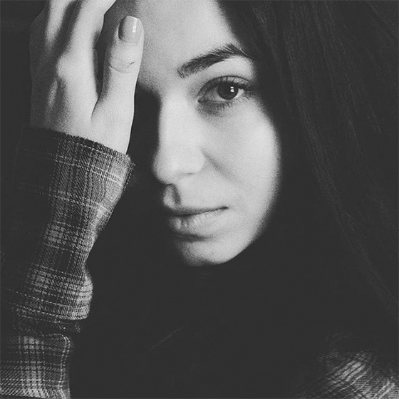
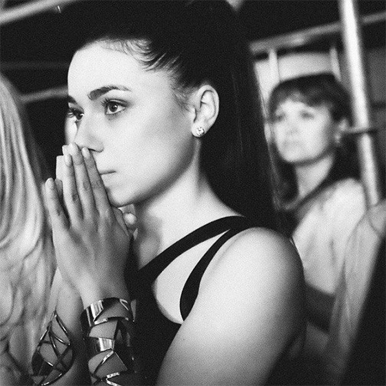
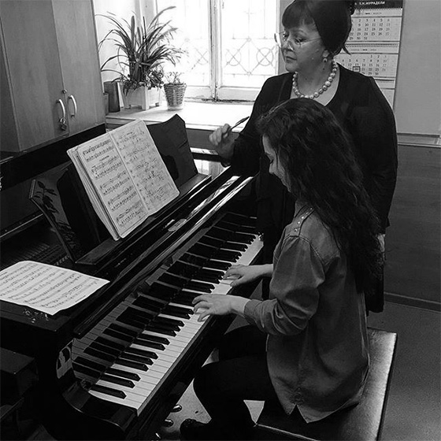
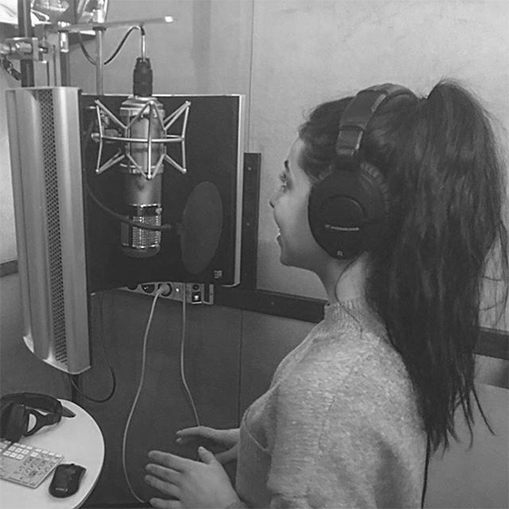

Родилась в поселке Комсомольский Павловского района Алтайского края. В 6 лет начала профессиональные занятия спортивными бальными танцами, благодаря чему довольно рано приобрела сценический опыт. Занятия хореографией оказали большое влияние на характер будущей артистки - девочка росла очень целеустремленной и трудолюбивой. Упорные занятия принесли свои результаты: Диана стала абсолютной чемпионкой Алтайского края и кандидатом в мастера спорта. Но девушка решила отказаться от танцевальной карьеры, чтобы получить высшее образование. Окончив педагогический лицей с филологическим уклоном, летом 2013 года Диана поступила на экономический факультет Алтайского Государственного Университета в городе Барнаул. Каждый день девушке приходилось проделывать путь из родного посёлка в институт и обратно. Выбрав направление Международная экономика, юная студентка усиленно занималась изучением французского языка, и летом 2014 отправилась во Францию, где совершенствовала свои знания несколько месяцев.
К моменту поступления в университет Диана в серьез увлеклась пением. В выпускных классах она познакомилась с участницами местной эстрадной вокальной группы и решила попробовать свои силы, как певица. В составе ансамбля девушка несколько раз выступила на небольших концертах в Павловском районе, после чего покинула группу. Вторым творческим экспериментом будущей алтайской звезды стал новый музыкальный проект «Адмирал» в родном поселке Комсомольский. Там Диана впервые начала систематические занятия музыкой. Вокально-танцевальный формат коллектива предполагал участие 10 девушек возрастом от 14 до 16 лет. Вскоре в проекте обозначилась вокальная четверка лидеров, в которую вошла и Диана. Спустя некоторое время коллектив распался, но индивидуальные занятия с педагогом вокала певица продолжила.
Диана начала работу над сольной программой из cover-композиции группы «Roxette». В какой-то момент девушка решила, что пришло время создавать свой собственный музыкальный материал. Диана начала писать стихи, которые и легли в основу авторских песен. Первую композицию на собственный текст «В городе осень» девушка презентовала публике «живьем» в сентябре 2014 года на открытой площадке в один из городских праздников. Воодушевившись успехом, юная поэтесса решила вплотную заняться авторской музыкой, но найти хорошего композитора в маленьком городе было очень сложно. Тем не менее, вскоре в репертуаре Дианы появилась еще одна песня на собственный текст и первый клип, который практически своими силами снимали в Новосибирске.
Началась интенсивная работа с музыкантами из Новосибирска и жизнь без выходных. Теперь Диана стала проводить все свободное от учебы время не дома, а в Новосибирске, где занималась вокалом, основам поэтического текста, записями на студии и пр. Зимой 2015 года было написано еще несколько песен, которые позже решено было переосмыслить по-новому. Постепенно Диана стала пробовать искать свой собственный стиль. После многочисленных попыток близкое сердцу направление было выбрано - Диану захватил мир pop-rock музыки. В тот период девушка работала под псевдонимом Даяна, объединяющим ее собственное имя и именем сестры Яны. Желание творить привело к новым идеям музыкального видео на авторскую песню «Звезды не гаснут». На этот раз съемки проводились в Сочи, однако на большой экран клип так и не вышел.
 В мае 2015 Диана открыла для себя джаз и начала занятия вокалом на профессиональном уровне. А летом того же года один из коллег по творчеству и учителей Дианы, сообщил ей, что на местном радио проводится конкурс авторский песни. Девушка отправила заявку с песней «Северный ветер». Какое-то время песня находилась в ротации, и, по итогам голосования, Диана стала обладательницей первого места! В качестве приза певица получила возможность выступить с собственной песней на Дне города Новосибирска. В этот период певица начала усиленную подготовку к участию во Всероссийском фестивале народного творчества и спорта им. М. Евдакимова «Земляки», который ежегодно проходит в августе в селе Верх-Обское, и является значимым культурным событием для всех жителей Алтайского края. По правилам, наиболее ярко проявивший себя участник, мог получить путевку на знаменитый международный фестиваль искусств «Славянский Базар в Витебске».
Диана решила, что обязательно получит путевку на «большую сцену», но для этого выступление должно стать самым лучшим. Помимо возможности исполнить авторскую песню в конкурсной программе, девушка должна была выступить на заключительном Гала-концерте. За короткий срок Диана смогла подготовить очень серьезную программу. Выступление юной алтайской звезды произвело настоящий фурор, публика аплодировала стоя и не хотела отпускать восходящую звезду со сцены! Девушка получила заслуженную путевку на «Славянский базар», который состоится в 2016 году.
Диана осознала, что музыка незаметно для нее стала главным делом жизни и приняла смелое решение уехать в Москву, чтобы завоевать мир шоу-бизнеса. Сейчас Диана живет в столице и полностью посвящает себя творчеству. Ежедневно певица занимается вокалом, игрой на фортепиано, записывает новые песни, участвует в фотосессиях и светских музыкальных мероприятиях, снимает клипы и готовится удивить всех свежими хитами.
